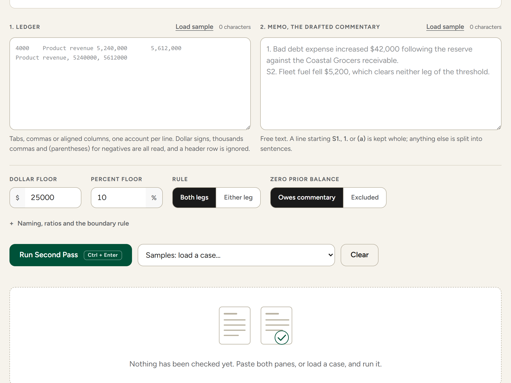
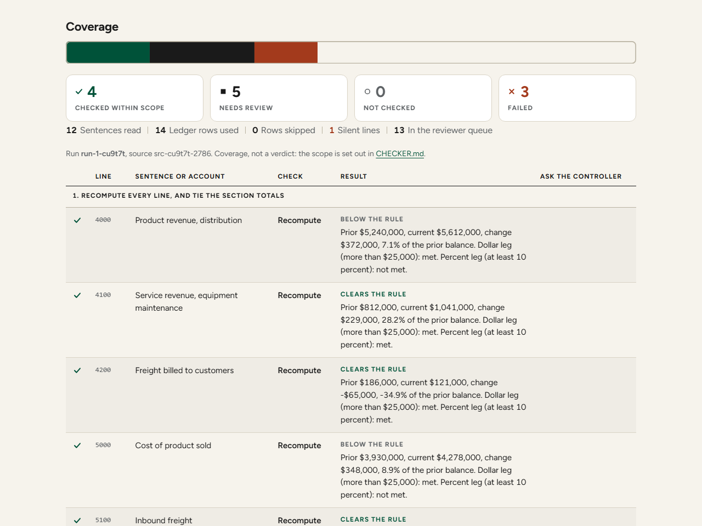
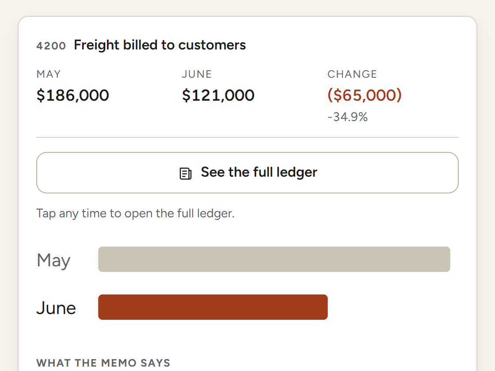
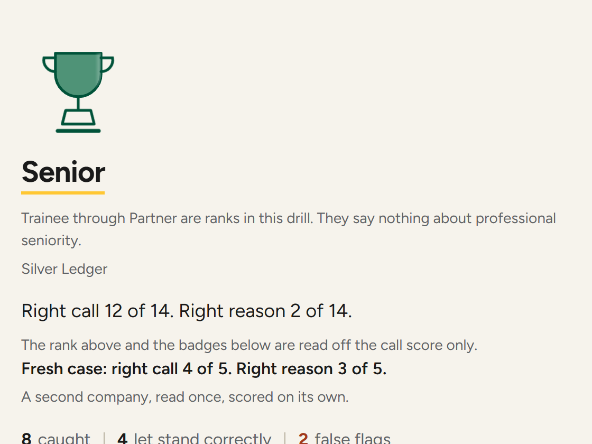

Second Pass: the entry in one page
The review that comes after an AI assistant drafts the close memo, built as a checker, a protocol and a ten-minute drill.
Every figure in the drafted memo can tie to the ledger while the reason printed beside it rests on nothing. The control belongs between the draft and the signature, where the memo is still cheap to fix.
Who this is for
- The controller who has to sign a memo an assistant wrote.
- The audit senior testing whether that memo was reviewed at all.
- The student who will be handed this work in their first month.
How a review runs
In the browser, with nothing to install.

Paste the ledger and the memo beside it.

Four checks run and print a status for every sentence and every account.

The drill puts one account in front of you.

The record keeps every call and its basis.
01The problem
An assistant drafts the close commentary now, and the draft reads fluently whether or not its reasons hold. Every figure can tie while the reason rests on nothing.
02Governance
- 1RecomputeEach dollar and percent claim the checker recognizes, against the ledger.
- 2DirectionEach direction word the checker recognizes, against the sign.
- 3CoverageEvery account over the threshold, named.
- 4Sign-offA reviewer answers the driver and the period.
03The evidence run
On Halyard the 13 September checker read 30 sentences in the blind draft and failed 2, both in the summary paragraph, where it tied correct subtotals to a single account. Under Prompt 1 it read 8 and failed none.
Blind run, account 6400
6400 Bad debt expense: +$47,000 (+313.3%)
Specific reserve established against…
Prompt 1 run, account 6400
6400 Bad debt expense: … rose $47,000,
313.3 percent, because no source on file.
04Outcomes
The response export fills these, one row per attempt, and an attempt is not a person. The call and the reason are scored separately, so a run can agree with the answer key and give a basis that does not. The reason chips measure agreement with accepted reason categories, and on the five fresh-case items a short written explanation is scored blind by an independent educator against a rubric. These are answer-key agreement on a keyed exercise and nothing more, and five items with no baseline cannot show a learning gain. Every run can be saved to a file on the player’s own machine, sending it is a separate step the player chooses, and a codename is a pseudonym rather than anonymity.
05Scope
Checks on the financial claims the checker recognizes, the two questions for a reviewer, the evidence log, a separate Excel workbook, and a drill that scores the call against a key and the reason chips as category agreement.
No driver or timing verdict, no loose account match, and no opening of a workbook file in the browser, where the cells are pasted instead.
The checks running before a reviewer reads the memo, and a review record from a practitioner working a ledger they did not build.
06Replicability
The protocol governs the memo rather than the model that drafted it, the threshold is a setting, and the drill fits inside one chapter meeting.